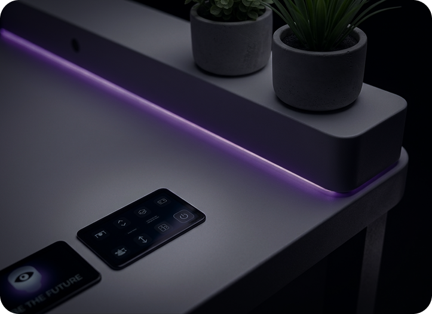
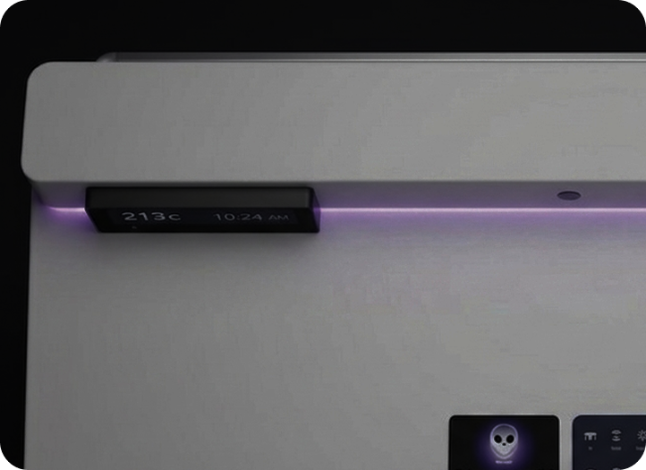
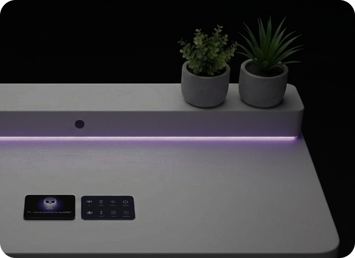

Um Olhar Detalhado
.png)
Luz na medida certa

Silêncio produtivo.

Conforto invisível.
Arraste para explorar
Inteligência que cuida de você
Apresentamos a MILA ― Módulo de Inteligência, Logística e Aprendizado. Uma mesa inteligente projetada para transformar seu ambiente de estudos em um ecossistema de alta performance. Através da integração harmônica entre sensores de precisão e hardware dedicado, a MILA monitora sua postura, otimiza a ergonomia e ajusta o ambiente para que seu foco seja absoluto e sua saúde, prioridade.
Além das telas
Diferente das IAs comuns que vivem apenas no seu navegador, a MILA sente o mundo real. Ela não apenas processa dados; ela entende o seu espaçon físico e interage com o seu ambiente para otimizar seu rendimento.
Adeus ao cansaço
Uma mesa comum é estática. A MILA é dinâmica. Com sensores de inclinação e pressão, ela monitora sua coluna de forma invisível, alertando você antes mesmo de a dor aparecer. É a ergonomia que se adapta a você, e não o contrário.
Organização sem esforço
Equipada com uma câmera inteligente dedicada à logística, a MILA reconhece seus materiais e auxilia na gestão do seu espaço de trabalho. Ela aprende onde as coisas devem estar para que sua mente fique livre para o que importa.
O ambiente perfeito, sempre
Enquanto outras soluções exigem ajustes manuais, a MILA utiliza IA para equilibrar a luminosidade e monitorar o ruído ambiente. Ela cria uma bolha de produtividade personalizada para o seu nível de cansaço e tipo de tarefa.